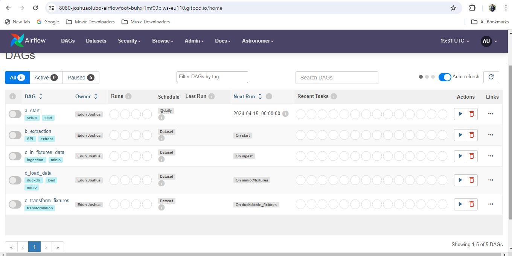
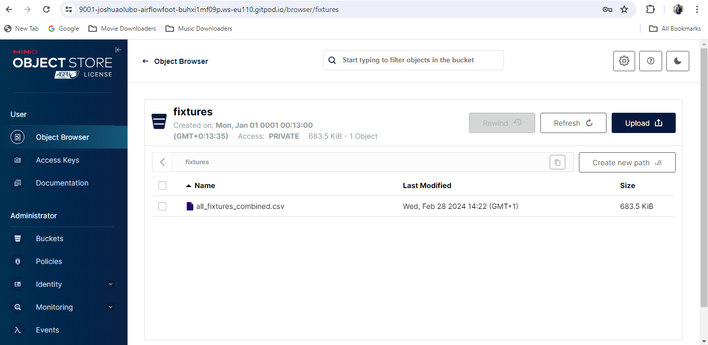

"""DAG that kicks off the pipeline by producing to the start dataset."""
# --------------- #
# Package imports #
# --------------- #
from airflow import Dataset
from airflow.decorators import dag
from airflow.operators.bash import BashOperator
from pendulum import datetime
# -------------------- #
# Local module imports #
# -------------------- #
from include.global_variables import global_variables as gv
# --- #
# DAG #
# --- #
@dag(
start_date=datetime(2023, 1, 1),
# after being unpaused this DAG will run once, afterwards it can be run
# manually with the play button in the Airflow UI
schedule="@once",
catchup=False,
default_args=gv.default_args,
description="Run this DAG to start the pipeline!",
tags=["start", "setup"],
)
def a_start():
# this task uses the BashOperator to run a bash command creating an Airflow
# pool called 'duckdb' which contains one worker slot. All tasks running
# queries against DuckDB will be assigned to this pool, preventing parallel
# requests to DuckDB.
create_duckdb_pool = BashOperator(
task_id="bash_task",
bash_command="airflow pools list | grep -q 'duckdb' || airflow pools set duckdb 1 'Pool for duckdb'",
outlets=[gv.DS_START],
)
start_dag = a_start()
Context
This third and final part of the project is about orchestrating the data pipeline. We’ll examine the data storage and transformation strategies, including the utilization of Minio for object storage and the Astro SDK for efficient in-database transformations within DuckDB.
Finally, we’ll explore the user-friendly Streamlit frontend that allows users to interact with and visualize the processed football fixture data. By bringing these elements together, this part concludes the series, transforming the initial concept into a robust data pipeline.
Click here for Part 1 and Part 2 of the series.
This project was inspired by the Astronomer Quick Start Repo for getting started with Apache Airflow.
Here’s a breakdown of the chosen technologies:
Airflow: Orchestrates and schedules the data pipeline tasks seamlessly.
Docker: Encapsulates the application and its dependencies within lightweight containers, ensuring consistent execution across different environments.
Astronomer: Simplifies Airflow management and deployment.
MinIO: Provides scalable and reliable object storage for data persistence.
DuckDB: Acts as the embedded database for storing and querying the transformed data.
Streamlit: Enables the creation of a user-friendly web application for data visualization and exploration.
Demo

1. System architecture
- EXTRACT
- Football API Integration: Similar to the previous iteration, we utilize Python to retrieve football fixture data from the RapidAPI. The extracted data is stored locally in CSV format.
2. LOAD
- MinIO Object Storage: MinIO, a highly scalable and reliable object storage solution similar to Amazon S3, acts as the central repository for the extracted data. The local CSV file is uploaded to MinIO for persistent storage.
3. TRANSFORM
DuckDB Integration: DuckDB, a powerful embedded database, serves as the in-memory storage for the data during the transformation process. The data is downloaded from MinIO and loaded into DuckDB for efficient filtering and manipulation.
Data Transformation: By using the Astro Python SDK, the data within DuckDB undergoes transformation according to specific criteria detailed in part 2 of this series.
Transformed Data Storage: The transformed data is ultimately stored within DuckDB as a separate table, readily accessible for further analysis.
4. FRONTEND
- Streamlit Application: A dedicated Streamlit container hosts a user-friendly web application. This application interacts with DuckDB, retrieving and visualizing the transformed data.
2. Implementation details
Initiating the DAG: start.py

start.pydefines the initial Airflow DAG using the@dagdecorator.It sets the DAG to run only once manually and defines default arguments and descriptive metadata.
The code creates a dedicated “duckdb” pool with one worker slot using a
BashOperator. This pool ensures controlled execution of tasks querying DuckDB.
Data Acquisition: extract.py
This DAG, defined in extract.py, extracts football fixture data from an API and combines them.
fetch_data function:
Fetches data from the API using the
fetch_datafunction, defined ininclude.logic.Optionally passes arguments like the chosen season (e.g., “2023”).
concatenate_csvs function:
Combines multiple CSV files located in a specified directory (
gv.FIXTURES_DATA_FOLDER) into a single file (all_fixtures_combined.csv)Uses
os.walkto iterate through the directory andpandas.concatto combine the dataframes.
DAG Definition:
Similar to
start.py, the DAG is defined using the@dagdecorator with various parameters.This DAG depends on the
gv.DS_STARToutput, meaning it only runs after the initial DAG (start.py) finishes.
"""DAG that extracts fixtures data from an API, and concatenates them into a single file saved to the local disk."""
# --------------- #
# PACKAGE IMPORTS #
# --------------- #
from pendulum import datetime
import io
import os
import pandas as pd
from airflow.decorators import dag
from airflow.operators.python import PythonOperator
# -------------------- #
# Local module imports #
# -------------------- #
from include.global_variables import global_variables as gv
from include.logic import fetch_data
def concatenate_csvs(root_dir, output_file):
csv_files = []
for root, _, files in os.walk(root_dir):
for file in files:
if file.endswith(".csv"):
file_path = os.path.join(root, file)
csv_files.append(file_path)
if not csv_files:
gv.task_log.warning("No CSV files found in the specified directory.")
return
combined_df = pd.concat([pd.read_csv(file) for file in csv_files])
combined_df.to_csv(os.path.join(root_dir, output_file), index=False)
# --- #
# DAG #
# --- #
@dag(
start_date=datetime(2023, 1, 1),
# this DAG runs as soon as the "start" Dataset has been produced to
schedule=[gv.DS_START],
catchup=False,
default_args=gv.default_args,
description="extract fixtures data from API.",
tags=["extract", "API"],
render_template_as_native_obj=True,
)
def b_extraction():
api_fetcher = PythonOperator(
task_id = "fetch_data",
python_callable= fetch_data,
op_kwargs = {
"chosen_season": "2023"
}
)
concatenator = PythonOperator(
task_id = "concat_csvs",
python_callable= concatenate_csvs,
op_kwargs = {
"root_dir": gv.FIXTURES_DATA_FOLDER,
"output_file": "all_fixtures_combined.csv"
},
outlets=[gv.DS_INGEST]
)
api_fetcher >> concatenator
b_extraction()Data Storage and Transfer: MinIO and Airflow Operators

This section covers how the data pipeline utilizes MinIO for object storage and interacts with it using custom Airflow operators.
Minio as Object Storage:
Minio serves as a central repository for storing the extracted and transformed football fixture data.
It offers a scalable and reliable alternative to traditional file systems.
Its S3 compatibility allows seamless integration with Airflow operators designed for S3.
Airflow Operators for MinIO Interactions:
CreateBucket: (Defined increate_bucket.py)- Ensures a bucket named
gv.FIXTURES_BUCKET_NAMEexists in MinIO before uploading data.
- Ensures a bucket named
LocalFilesystemToMinIOOperator: (Defined incustom_operators.minio.py)Uploads local CSV files from
gv.FIXTURES_DATA_PATHto the MinIO bucket.It utilizes dynamic task expansion, allowing the addition of new files to the folder without modifying the DAG code.
MinIOListOperator: (Defined incustom_operators.minio.py)- Lists all objects within the
gv.FIXTURES_BUCKET_NAMEbucket.
- Lists all objects within the
Custom
load_fixtures_datatask: (Defined inload_minio_to_duckdb.py)Iterates through the listed objects in Minio.
Downloads each object as a temporary CSV file.
Uses
duckdb.connectto establish a connection to the DuckDB database.Creates a new table in DuckDB using
CREATE TABLEwith the downloaded data loaded from the temporary CSV file.Deletes the temporary CSV file after loading the data.
"""DAG that loads fixtures ingests from local csv files into MinIO."""
# --------------- #
# PACKAGE IMPORTS #
# --------------- #
from airflow.decorators import dag
from pendulum import datetime
import io
# -------------------- #
# Local module imports #
# -------------------- #
from include.global_variables import global_variables as gv
from include.custom_task_groups.create_bucket import CreateBucket
from include.custom_operators.minio import LocalFilesystemToMinIOOperator
# --- #
# DAG #
# --- #
@dag(
start_date=datetime(2023, 1, 1),
schedule=[gv.DS_INGEST],
catchup=False,
default_args=gv.default_args,
description="Ingests fixtures data from provided csv files to MinIO.",
tags=["ingestion", "minio"],
render_template_as_native_obj=True,
)
def c_in_fixtures_data():
create_bucket_tg = CreateBucket(
task_id="create_fixtures_bucket", bucket_name=gv.FIXTURES_BUCKET_NAME
)
ingest_fixtures_data = LocalFilesystemToMinIOOperator.partial(
task_id="ingest_fixtures_data",
bucket_name=gv.FIXTURES_BUCKET_NAME,
outlets=[gv.DS_FIXTURES_DATA_MINIO],
).expand_kwargs(
[
{
"local_file_path": gv.FIXTURES_DATA_PATH,
"object_name": gv.FIXTURES_DATA_PATH.split("/")[-1],
},
]
)
# set dependencies
create_bucket_tg >> ingest_fixtures_data
c_in_fixtures_data()
"""DAG that loads fixtures from MinIO to DuckDB."""
# --------------- #
# PACKAGE IMPORTS #
# --------------- #
from airflow.decorators import dag, task
from pendulum import datetime, parse
import duckdb
import os
import json
# -------------------- #
# Local module imports #
# -------------------- #
from include.global_variables import global_variables as gv
from include.custom_operators.minio import (
MinIOListOperator,
MinIODeleteObjectsOperator,
)
# --- #
# DAG #
# --- #
@dag(
start_date=datetime(2023, 1, 1),
schedule=[gv.DS_FIXTURES_DATA_MINIO],
catchup=False,
default_args=gv.default_args,
description="Loads fixtures data from MinIO to DuckDB.",
tags=["load", "minio", "duckdb"],
render_template_as_native_obj=True,
)
def d_load_data():
list_files_fixtures_bucket = MinIOListOperator(
task_id="list_files_fixtures_bucket", bucket_name=gv.FIXTURES_BUCKET_NAME
)
@task(outlets=[gv.DS_DUCKDB_IN_FIXTURES], pool="duckdb")
def load_fixtures_data(obj):
"""Loads content of one fileobject in the MinIO fixtures bucket
to DuckDB."""
minio_client = gv.get_minio_client()
minio_client.fget_object(gv.FIXTURES_BUCKET_NAME, obj, file_path=obj)
cursor = duckdb.connect(gv.DUCKDB_INSTANCE_NAME)
cursor.execute(
f"""DROP TABLE IF EXISTS {gv.FIXTURES_IN_TABLE_NAME};"""
)
cursor.execute(
f"""CREATE TABLE IF NOT EXISTS {gv.FIXTURES_IN_TABLE_NAME} AS
SELECT * FROM read_csv_auto('{obj}');"""
)
cursor.commit()
cursor.close()
os.remove(obj)
# set dependencies
fixtures_data = load_fixtures_data.expand(obj=list_files_fixtures_bucket.output)
d_load_data()Data Transformation and Analysis: Filtering and Transformation in DuckDB
find_fixtures_c1andfind_fixtures_c2functions:
- Defined using
@aql.dataframedecorators, enabling interaction with DuckDB through the Astro SDK.
They both:
Access the data from the
gv.FIXTURES_IN_TABLE_NAMEtable usingTableobjects.Print the ingested data to Airflow logs for debugging purposes.
2. Filtering:
The functions call custom logic (
apply_filtering_logic) defined ininclude.logic, containing filtering criteria based on conditions specified by the client. The logic of the functions, as of now, are proprietary and disclosure will be considered upon request by an interested reader.The
lenzifunction checks if the resulting dataframe is empty. If empty, a predefined dataframe with a message (“no fixtures satisfy condition yet”) is returned to indicate no matches met the criteria.
3. Transformation:
- The functions call another custom function (
won_last_5_matches), that implements another set of filtering logic on the dataset.
4. Storing transformed data:
The transformed dataframes are stored in separate DuckDB tables:
gv.REPORTING_TABLE_NAME_1andgv.REPORTING_TABLE_NAME_2, correspond to the results offind_fixtures_c1andfind_fixtures_c2, respectively.This is achieved by specifying the
output_tableargument within theTableobject during function calls.
"DAG that runs a transformation on data in DuckDB using the Astro SDK."
# --------------- #
# PACKAGE IMPORTS #
# --------------- #
from airflow.decorators import dag
from pendulum import datetime
import pandas as pd
# import tools from the Astro SDK
from astro import sql as aql
from astro.sql.table import Table
# -------------------- #
# Local module imports #
# -------------------- #
from include.global_variables import global_variables as gv
from include.logic import apply_filtering_logic, won_last_5_matches
def lenzi(df):
"""Function to check for empty dataframe
https://stackoverflow.com/questions/19828822/how-do-i-check-if-a-pandas-dataframe-is-empty
"""
return len(df.index) == 0
# creating a dataframe to show if no fixtures obey filtering conditions
default_df = pd.DataFrame(columns=['Date', 'HomeTeam', 'HomeScore', 'AwayScore', 'AwayTeam'])
row_data = {
'Date': 'no',
'HomeTeam': 'fixtures',
'HomeScore': 'satisfies',
'AwayScore': 'condition',
'AwayTeam': ' yet'
}
default_df = default_df.append(row_data, ignore_index=True)
# ----------------- #
# Astro SDK Queries #
# ----------------- #
@aql.dataframe(pool="duckdb")
def find_fixtures_c1(in_table: pd.DataFrame):
gv.task_log.info(in_table)
df = in_table
output_df = apply_filtering_logic(df)
gv.task_log.info(output_df)
if lenzi(output_df) == True:
gv.task_log.info("df is empty")
return default_df
return output_df
@aql.dataframe(pool="duckdb")
def find_fixtures_c2(in_table: pd.DataFrame):
gv.task_log.info(in_table)
df = in_table
output_df = won_last_5_matches(df)
gv.task_log.info(output_df)
if lenzi(output_df) == True:
gv.task_log.info("df is empty")
return default_df
return output_df
# --- #
# DAG #
# --- #
@dag(
start_date=datetime(2023, 1, 1),
schedule=[gv.DS_DUCKDB_IN_FIXTURES],
catchup=False,
default_args=gv.default_args,
description="Runs transformations on fixtures data in DuckDB.",
tags=["transformation"],
)
def e_transform_fixtures():
find_fixtures_c1(
in_table=Table(
name=gv.FIXTURES_IN_TABLE_NAME, conn_id=gv.CONN_ID_DUCKDB
),
output_table=Table(
name=gv.REPORTING_TABLE_NAME_1, conn_id=gv.CONN_ID_DUCKDB
),
)
find_fixtures_c2(
in_table=Table(
name=gv.FIXTURES_IN_TABLE_NAME, conn_id=gv.CONN_ID_DUCKDB
),
output_table=Table(
name=gv.REPORTING_TABLE_NAME_2, conn_id=gv.CONN_ID_DUCKDB
),
)
e_transform_fixtures()Frontend with Streamlit: Data Exploration and Visualization
Data Retrieval:
The app uses functions like list_currently_available_tables and get_fixtures_1/2 to:
Ensures a bucket named
gv.FIXTURES_BUCKET_NAMEexists in MinIO before uploading data.List available tables in DuckDB (
reporting_table_1andreporting_table_2).Fetch data from these tables using DuckDB queries and convert them into Pandas DataFrames.
User Interface:
The app displays a title, a welcome message, and uses expanders — a Streamlit component — to organize the content.
Conditionally displays the retrieved Dataframes based on their availability in DuckDB.
# --------------- #
# PACKAGE IMPORTS #
# --------------- #
import streamlit as st
import duckdb
import pandas as pd
from datetime import date, datetime
import altair as alt
# from global_variables import global_variables as gv
duck_db_instance_path = (
"/app/include/dwh" # when changing this value also change the db name in .env
)
# -------------- #
# DuckDB Queries #
# -------------- #
def list_currently_available_tables(db=duck_db_instance_path):
cursor = duckdb.connect(db)
tables = cursor.execute("SHOW TABLES;").fetchall()
cursor.close()
return [table[0] for table in tables]
def get_fixtures_1(db=duck_db_instance_path):
cursor = duckdb.connect(db)
fixtures_data = cursor.execute(
f"""SELECT * FROM reporting_table_1;"""
).fetchall()
fixtures_data_col_names = cursor.execute(
f"""SELECT column_name from information_schema.columns where table_name = 'reporting_table_1';"""
).fetchall()
df = pd.DataFrame(
fixtures_data, columns=[x[0] for x in fixtures_data_col_names]
)
cursor.close()
return df
def get_fixtures_2(db=duck_db_instance_path):
cursor = duckdb.connect(db)
fixtures_data = cursor.execute(
f"""SELECT * FROM reporting_table_2;"""
).fetchall()
fixtures_data_col_names = cursor.execute(
f"""SELECT column_name from information_schema.columns where table_name = 'reporting_table_2';"""
).fetchall()
df = pd.DataFrame(
fixtures_data, columns=[x[0] for x in fixtures_data_col_names]
)
cursor.close()
return df
# ------------ #
# Query DuckDB #
# ------------ #
tables = list_currently_available_tables()
if "reporting_table_1" in tables:
fixtures_result_table_1 = get_fixtures_1()
if "reporting_table_2" in tables:
fixtures_result_table_2 = get_fixtures_2()
# ------------- #
# STREAMLIT APP #
# ------------- #
st.title("Fixtures Transformation Results")
st.markdown(f"Hello Joshua :wave: Welcome to your Streamlit App! :blush:")
# Get the DataFrame
# Display the DataFrame as a table in Streamlit
# st.dataframe(fixtures_result_table_1)
with st.expander("Section 1: Fixtures in which either teams have won 3 games or more against common opponents in the league"):
st.dataframe(fixtures_result_table_1) # Optional styling
with st.expander("Section 2: Fixtures in which either teams have won all 5 games in their last 5 league matches"):
st.dataframe(fixtures_result_table_2)Conclusion
This project is my introduction to the world of pipeline orchestration. I cannot wait to implement more orchestrated data jobs in the future!